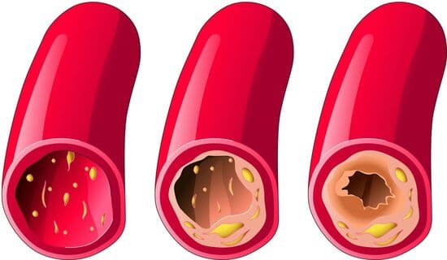
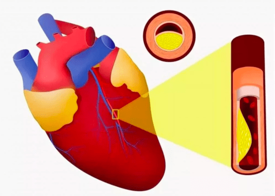

Az életkor nem lehet akadály! Egy akadémikus feltárta a hosszú élet és a kiváló egészség titkát
28.02.2021
Klaus Fischer, a kardiológia területének ismert szakembere, feltaláló, professzor, aki munkássága során számtalan állami elismerésben részesült, felfedezett egy innovatív módszert a magas vérnyomás terápiájához! Klaus Fischer állítása szerint az erek ilyen megtisztítása után megszűnik a magas vérnyomás és sok olyan probléma, amelyet korábban "reménytelennek" tartottak. A kardiológia területének szakembere eddig valamennyi kijelentését megerősítette.
Tudósítónknak sikerült interjút készítenie Klaus Fischerrel, aki részletezte a vérerek tisztításának és az élet meghosszabbításának módszerét.
Fischer úr, ön többször is azt állította, hogy az egészség alapjai a tiszta véredények. Mivel indokolja ezen állítását?
Köztudott, hogy a magas vérnyomás, a stroke és az infarktus a koleszterinnel „szennyezett” vérerek következménye. De azt már kevesen tudják, hogy ez csak a jéghegy csúcsa. 5-ből 7 krónikus betegség a "szennyeződött" erek miatt alakul ki. Ezek a betegségek állítólag gyógyíthatatlanok.
Mit jelentenek a "szennyeződött" vérerek? Képzeljen el egy vascsövet, ami teljesen el van rozsdásodva. Mi történik? A víz nyomása megnő, a víznek pedig kellemetlen íze lesz. Ugyanez történik a vérerekkel is. Amikor a vérerekre lerakódik a koleszterin vagy egyéb anyag, a vérnyomás megnő (a magas vérnyomás legfőbb kiváltó oka a szennyeződött vérerek!), magában a vérben is jelen van, ezért a vérkeringés sem olyan, amilyennek lennie kéne. Ennek eredményeképpen valamennyi szerv és szervezetbeli rendszer károsodik. Még a bőr is egy bizonyos rendszert alkot.


Az erek tehát fokozatosan elszennyeződnek. Ha még soha nem tisztította őket, és már 40 évesnél idősebb, akkor bizony már alaposan szennyezettek. Ami hamarosan kihatással lesz az egészségére, ha eddig még nem történt meg.
Vannak-e olyan tünetek, amelyek alapján megállapíthatjuk, hogy az erek szennyezettek?
Igen, természetesen. A fő tünetek a következők:
- Magas vérnyomás;
- Memóriazavar;
- Krónikus fáradtsá;
- Légszomj és angina pectoris;
- Intim jellegű problémák;
- Látás- és hallásproblémák;
- Fejfájás;
- Álmatlanság;
- Halvány bőrszín a lábakon;
- Ízületi és izomfájdalom.
Valójában az erek nagyon gyorsan szennyeződnek, különösen az idősebb embereknél. Ehhez nem kell egész nap hamburgert vagy sült krumplit ennie. Az erekben bizonyos mennyiségű koleszterin még az olyan egyszerű ételek elfogyasztása után is felgyülemlik, mint a kolbász vagy a tojás. Idővel a szennyezés felhalmozódik.
Fischer úr, ön mindig azt mondja, hogy a vérerek felelősek a szervezet egészségének a 90%-ért? Miért?
Az erek nem egyszerű csövek, amin vér áramlik. Ez egy összetett és egyedülálló szerv, amely ha károsodik, az jelentős szenvedéssel jár.
1. Beteg erek a lábban: visszér, állandó duzzanat és örök nehézségérzet a lábakban, hidegség vagy elviselhetetlen égő érzés a lábakban. Kirepedezett sarok. Rossz vérkeringés - nincs védelem a baktériumok, ennek megfelelően a gombák ellen sem. A köröm megvastagszik és hosszúra nő
2. A májat tápláló erek eltömődtek: hepatitis. Keserű szájíz. Zsírok fogyasztása után keserű böfögés
3. Meggyengült és szennyezett erek az ízületekben: kiszáradt porc. Ízületi fájdalom és szárazság, kialakul az osteochondrosis, sérvek keletkeznek
4. A szemünkben lévő erek: látásromlás, homályos látás, “úszó foltok”. Kialakul a szürkehályog. A szem kipirosodása, amelyet gyakran a fáradtságnak tulajdonítunk, valójában egy mikrovérzés, amikor a szemünkben lévő legkisebb kapillárisok felszakadnak
5. Az agyi vérkeringés megnehezedik: szédülést, fülzúgást érez, feledékennyé válik. Korábban előfordult önnel olyan, hogy elindult a konyhába, de mire kiért, már nem emlékezett, miért ment oda. Vagy már a nyelve hegyén van a szó, amit ki akar mondani, de nem jut eszébe. Ez mind arra utal, hogy az agyban lévő erek állapota romlott
És természetesen a hipertónia, amely valamennyi érrendszeri megbetegedés élén áll. A hipertónia a stroke és az infarktus előszobája.
A túlsúly például szorosan kapcsolódik a véredényekhez. A koleszterinnel eldugult erek éheztetik a szerveket, az erek nem tudják biztosítani számukra a szükséges tápanyagokat. Ezért az agy jeleket küld: enni kell. Az ember ilyenkor eszik. A szennyezett étel miatt a szerveink még mindig nem jutnak elég ételhez. Az agy ismét megadja a parancsot: enni kell. Újra és újra.
Ezért nassolunk folyton, éreznünk kell az édesség és a zsír ízét: a testnek kalóriára van szüksége.
Amikor a kollégák azt mondják az embereknek: "Önnek a túlsúly miatt magas a vérnyomása". Tévesen állapítják meg a kudarc okát. Nem a túlsúly okozza a magas vérnyomást. A magas vérnyomás okozza a túlsúlyt.
Elmondaná az erek megtisztításának titkát?
Az erek biztonságos tisztításához csak egyetlen, kifogástalan hírnévvel rendelkező szert tudok ajánlani: a -ot. A szer akár 21-26 évvel meghosszabbíthatja az életet, megtölti energiával és könnyedséggel, nem szenvedés és az utolsó életerőnk elvesztésének árán.
Biztonságos, akárcsak a gyógytea. Hatékonyság szempontjából a második helyen áll az erek műtéti úton történő megtisztítása után. A műtéttel ellentétben azonban nem áll fenn komplikáció vagy mellékhatás.
Az eljárással megtisztíthatja a szervezetben található valamennyi eret. A nagy, vastag artériáktól a legkisebb érzékeny kapillárisokig. Az évek során felhalmozott szennyeződések, amelyek az ön életét megmérgezik, 1.5-2 hónap alatt a rendszeres alkalmazásával kimoshatók.

1,3 hónap elteltével a segít feloldani és eltávolítani mind a 3,9 kg koleszterin-plakkokat. Elősegíti a 900g – 1 300g trombotikus tömeg feloldását, és 500–700 g meszesedés kimosását.
Velük együtt megszűnik a fejfájás, a fülzúgás abbamarad. Az agy a tiszta ereken keresztül megfelelő tápláláshoz jut, melynek révén szuperszámítógép sebességével működik. A gondolatok világossá és pontossá válnak.
Az érzések fokozódnak, és olyan kellemes hangokat hall, amelyekre korábban nem is figyelt. Javul a hallás, egy másik szobában zajló csendes beszélgetést is képes megérteni.
Az érzések fokozódnak, és olyan kellemes hangokat hall, amelyekre korábban nem is figyelt. Javul a hallás, egy másik szobában zajló csendes beszélgetést is képes megérteni
Az aromák erőssé és telítetté válnak. Az egyszerű ételek is rendkívüli élvezetet okoznak. Kevesebbet eszik, de mégis többnek érzi. Megszűnik az édesség és a zsíros ételek iránti folyamatos vágy.
Lenyűgöző. Valójában most hallok először a -ról. Bár már hallottam ilyen szerekről. Japánban és Izraelben törvényesen állapították meg ezeknek a szereknek a státuszát, mint előnyben részesített terápiás módot. De Németországban az emberek még mindig nem bíznak ezekben.
Németországban a csak egyetlen helyen van bejegyezve – egy berlini magánklinikán. Itt kezelik a társadalom "krémjét" - minisztereket, képviselőket, hírességeket, vagyis az elitet. Az izraeli jegyzőkönyveknek megfelelően ők ide tartoznak, és az egészségügyi miniszterünk sem ad ki rájuk vonatkozó rendeleteket. Ezért az embereknek itt vannak eredményei, nem csak egy végtelen folyamat.
A magán alapítvány a többi állampolgár számára olyan vegyszereket kínál terápiára, amelyeket ugyanahhoz az elithez tartozó gyárak állítanak elő. Képzelje el, hogy beszereztem a -ot, kinyitom a csomagolást. Mi történik ezután? Hogyan működik a szer?
Nedvességgel és oxigénnel érintkezve, a kivonatok hidrogén-peroxid hatást érnek el – vagyis az oxigénizációt.
A molekulák kis oxigénbombák. Segítenek kirobbantani a véredényekben lévő koleszterin gátat és biztosítani a vér szabad áramlását Nyugaton a megkapta a "véredény tisztító szer" elnevezést. Ez nagyon pontosan tükrözi a szer lényegét.
A kapszula összetétele az élő részecskék azonnali felszívódását is biztosítja. Az oxigénnel dúsított kivonatok könnyedén felszívódnak a nyelőcső falában. Ezért a nem okoz gyomorégést, keserű szájízt, böfögést, nem irritálja a bélrendszert és óvja a gyomrot.
Azt is szeretném megjegyezni, hogy a szer nem tartalmaz vegyi anyagokat, kizárólag erősen koncentrált növényi kivonatokat, amelyek hasznosak az érrendszer megtisztításához. Ezért nem csak ártalmatlan a szervezetre, de emellett nagyon hasznos.
Régi ismertségből fakadóan még mindig jönnek hozzám emberek, többek között az erek tisztítása miatt. Az utóbbi időben csak ezt a szert ajánlom. Mindenkinek segít, nagyon is jól.
Nem rég részt vettem egy felmérésben, amit a vásárlói körében végeztek. Összesen 2950 ember vett részt benne. Több mint 94%-uk azt mondta, hogy elégedettek a termék hatásával.
A -ot, amennyire tudjuk, levették a gyógyszertárak többségének a polcairól? Miért? Sajnos igen. Idén év eleje óta a már nem kapható a gyógyszertárakban.
A konfliktust egy kapzsi gyógyszertárlánc robbantotta ki, amely minden gyártójától pénzt követelt. Nagy haszonkulcsot hozva a gyártó árához (a ára egyes berlini gyógyszertárakban elérte a 100 eurót, a gyógyszerészek további díjat akartak bevezetni a gyártó számára.
A gyógyszertárak képviselői mentegetőznek: azt állítják, hogy ez a kiegészítő ár teszi számukra lehetővé a túlélést. Ezen túlmenően, miután az emberek a kapszula segítségével megtisztították az ereiket, többé nem lesz szükségük azokra a szerekre, amelyeket korábban folyamatosan szedtek! Az emberek nem fogják csökkenteni a vérnyomásukat és nem vásárolnak több fájdalomcsillapítót. Jelentősen csökken az asztma és a cukorbetegség terápiájához szolgáló szerek fogyasztása. És ez veszteségeket okoz a gyógyszertárak számára. Ezért a -ért a legmagasabb árat kérték el.
Ennek eredményeként a gyártója valamennyi gyógyszertárral megszakította a kapcsolatot, és áttért a szer kizárólag interneten történő terjesztésére. Elvileg ez a helyes. Döntsd el te magad: nem kell bérleti díjat fizetnie az értékesítés helyének bérléséért, a gyógyszertárakat sem kell megvesztegetni. Ezért a speciális ajánlat keretében kapható.
"Tiszta erek" kedvezményprogram
Intézetünk a gyártójával közösen kedvezményprogramot indított a telegyógyászati projekt (internetes terápia) keretében.
Mit kell tenni a programban való részvételhez?
Ahhoz, hogy hozzájusson a -hoz, a következő feltételeknek kell megfelelnie:
A használati feltételei:
- Jelentkezés a program hivatalos űrlapján
keresztül
A hivatalos űrlap garantálja a minőséget és a spekulánsok elleni védelmet.
- Csak személyes használatra
Ez a spekulánsokkal folytatott küzdelem számára van, akik hatalmas mennyiségben próbálják felvásárolni a -ot, hogy aztán nagy haszonnal viszonteladják azt.
Mennyi ideig tart a kedvezményes program?
05.04.2020 -ig bezárólag, vagy az utolsó csomag kiszállításáig. Mindez annak ellenére, hogy a rádióban és a televízióban nem reklámozzák. Az emberek továbbadják az információt, és családtagoknak, barátoknak ajánlják. Meglepetés volt számunkra, hogy a kedvezményprogramról szóló információk ilyen gyorsan elterjedtek.
Ezért azt javasoljuk, hogy rendelje meg a -ot minél előbb. Futárszolgálat. Azok a kapszulák, amelyeket nagy kihagyással szedett, nem lesznek hatásosak.
MEGBESZÉLÉS:
Gulyás András Szerkesztő Anikó, amennyire tudom, a program véget ért a környéken. Talán még lesz jövőre, de még mindig kérdéses.
Anikó De kár !!! Nem is tudom, mitévő legyek. Most egyszerűen nincs rá pénzem.
Éva Éva, vannak Anikó, vannak rokonai vagy barátai azon a környéken, ahol a program működik? Megkérhetné őket, hogy rendeljék meg. Már ha biztos úgy dönt, hogy az ismerőse nem veszi meg magának :-) mert a program feltételei szerint fejenként csak egy csomagot lehet rendelni.
Iván Vettem egy 3 hónapos kúrát majdnem 57000 forintért. Tavaly, amikor a még kapható volt gyógyszertárban. És azt mondom, hogy nem bántam meg! Bár kiderült, hogy elég drága, csak az elmúlt évben szinte ugyanennyit megspóroltam más szereken. Ez nagyban megkönnyítette az életemet, ezt nem lehet pénzben kifejezni! 62 éves koromban erejét vesztett nagypapának éreztem magam. Megpróbáltam nem túl messzire menni a vérnyomásmérőtől és a tablettáktól, arról még álmodni sem mertem, hogy túléljem a nyugdíjas éveimet, a fejem egész idő alatt hasogatott, azt gondoltam - inkább kínoznának meg... 3 hónap után minden vérnyomás problémám megszűnt, egészséges fiatal EMBERNEK érzem magam (ha érti, mire gondolok)! Ezért még ha az ön régiójában nincs is kedvezményes program, rendelje meg bónuszok nélkül, bármilyen pénzért - nem fogja megbánni! Remélem, hogy a -ot nem tiltják be Magyarországon.
Dora A mindennek a legjobb mérvadója: különböző szereket használtam, köztük népszerűeket is. Tudom, hogy ezek már elavultak. De nem szeretek orvoshoz járni, és nem igazán zavart engem a dolog. Időről időre bevettem, amikor a vérnyomásom felszökött vagy nagyon vert a szívem. De egyszer csak nem használtak többé. Aztán elmentem a szakemberhez és mondta, hogy próbáljam ki az új szert (a fiatal szakember valószínűleg még úgy gondolta, hogy a szerek az emberekért kell, hogy legyenek, a beteg nem fejőstehén!). A már az első adag bevételekor segített: a vérnyomásom azonnal esett, de elkezdtem a terápiát a szakember javaslata szerint. 3 hét után már azt se tudtam, mi az a magas vérnyomás. Azok a visszerek, amelyek 10 éven keresztül zavartak, eltűntek! Női problémám is volt, és az is megszűnt. Jól érzem magam, úgy, mint amikor fiatal voltam !
Karolina Köszönöm!!! Nekem sikerült rendelnem magamnak egy csomaggal. Hamarosan kipróbálom.
Gusztáv Újvidéken is van nekik ilyen, tudtok róla???
Gulyás András Szerkesztő Nem, a Vajdaságban később a tervek szerint kedvezményes programot indítanak. Ha semmi sem változik, 15,000 csomagot osztanak ki a városod és a régiód számára.
Elek Gábor15000 csomag az egész megyére? Ez csepp a tengerben ...
Hanna Csodálom a parazitákat !! Mindenki tartozik nektek örökre!! Amikor rájöttem, hogy szükségem van a -ra, nem vártam a kedvezményes programra! Kölcsönkértem és megvettem! Azt várják, hogy ingyen legyen! Szégyelld magad! Én szégyellném magam ilyet leírni !!
Antónia Anyukám ujjai zsibbadtak, a szakember azt tanácsolta, hogy tisztítsuk meg az ereit. Felírt "sztatinokat", de azt olvastam, hogy ezek bélrákot okozhatnak és úgy döntöttem, hogy jobb nem kockáztatni. Ennek eredményeként véletlenül szereztem tudomást a -ról. Elég jó áron vettük a szert. Az eredmények azonban nem sokáig várattak magukra, néhány nappal később jelentősen javult az arcszín, a haj, a köröm, a test általános állapota, és a második héten az ujjak alig zsibbadtak. Másfél hónap elteltével a zsibbadás teljesen megszűnt és a vérnyomás is rendbejött. Jól érzem magam, ég és föld, anyukám rengeteg energiát szerzett, javult a memóriája, és az ízületei sem fájnak többé a rossz időjárás miatt. Összességében kiváló a szer, mindenkinek ajánlom!
Beatrix Megkaptam a -t, ahogy azt írták! A vérnyomásom az egekben, fájt a fejem szinte minden este, falra tudtam volna mászni, még a fájdalomcsillapítók sem segítettek. Csak később tudtam meg, hogy a fejem a vérnyomás miatt fáj. De ez nem a lényeg. Egyik kollégám ajánlotta nekem a -ot, meg tudtam rendelni a kedvezményes programon belül, nagyon elégedett voltam. 2 hónap elteltével más ember lettem! Rájöttem, hogy mielőtt elvégeztem volna a tisztító kúrát, halott voltam! A fejem már nem fáj, a visszér elmúlt, és AMI A LEGFONTOSABB: 21 KILÓT FOGYTAM! 95 kg-ról 74-re! Mint amikor rendbe jön a vérkeringés! A -ot mindenkinek erősen ajánlom, óvintézkedésként!
Kálmán Köszönöm a visszajelzéseket! Én a kórházba járásnak egy furcsa rajongója vagyok, a klinikán vagy drága, vagy botrányos szereket írnak fel (emlékszem, hogy Mátészalkán egyik gyógyszertárában sem találtam "nem szokványos" vényköteles szemcseppet). És a szakemberek nem mindig látják a testünkkel kapcsolatos problémákat belülről. A kezem rendszeresen zsibbadt reggelente egy éven át. A visszajelzéseknek köszönhetően én is kipróbálom a -ot. Még ha ezt a zsibbadást nem is az okozza, az erek tisztítása semmiképp sem árt!! Csakúgy, mint a természetes termék szedése. Köszönöm!
Anikó Mondja el, mikor lesz elérhető az akciós program Szegeden? Nagyon jó áruk van a kapszuláknak ...